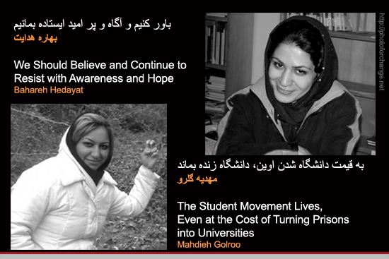
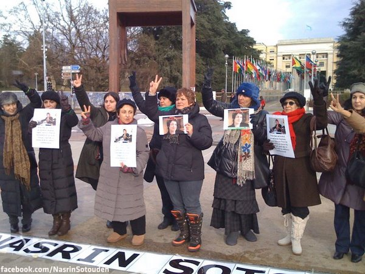
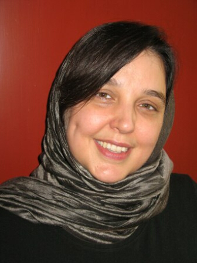
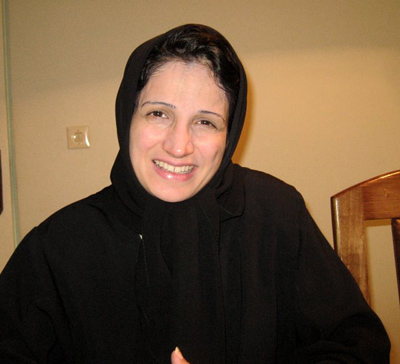
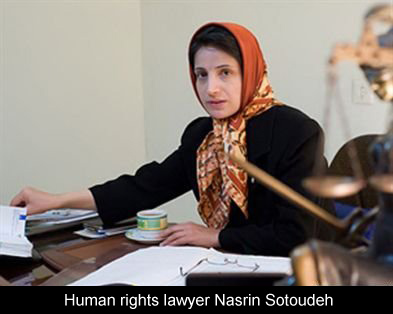
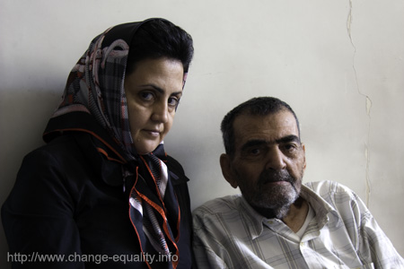
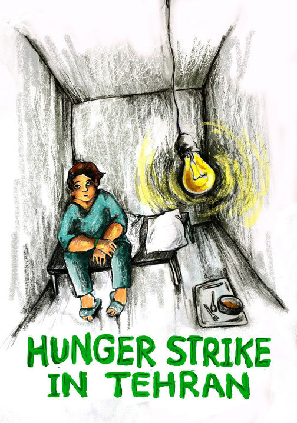

|
|
News
Latest update – Monday 17 March 2014.
Articles in this section
- 24 December 2010

- 24 December 2010

- 17 December 2010

- 14 December 2010

- 7 December 2010

- 18 November 2010
RSF Issues Statement Condemning Detention of Bloggers
- 17 November 2010

Severe Charges Announced Against an 18-Year Old One Million Signature Campaign Activist
- 17 November 2010

- 13 November 2010

- 10 November 2010

Sussan Tahmasebi Highlights Mounting Pressure Against Women Activists, Journalists
- 7 November 2010

- 5 November 2010
250 Issue Statement Demanding Release of Blogger and Campaign Activists
- 5 November 2010

- 28 October 2010
- 28 October 2010

- 27 October 2010

- 7 October 2010

- 4 October 2010

- 22 September 2010

- 30 August 2010

Mahboubeh Karami Sentenced to Four Years Mandatory Prison
- 29 August 2010

- 24 August 2010
Shiva Nazar Ahari: Amnesty International Issues Urgent Action Appeal
- 19 August 2010
- 19 August 2010

- 10 August 2010
- 8 August 2010

- 8 August 2010

- 8 August 2010

Karami’s Court Scheduled
- 4 August 2010
- 31 July 2010

|